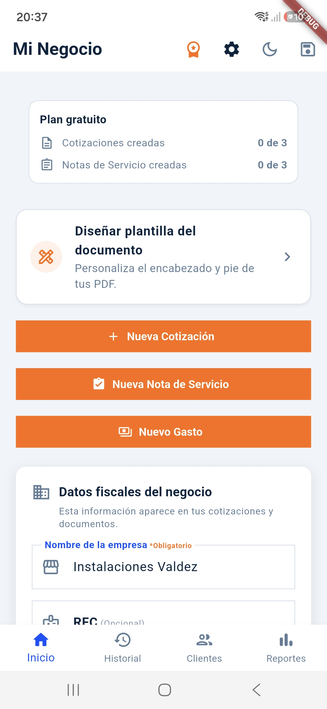
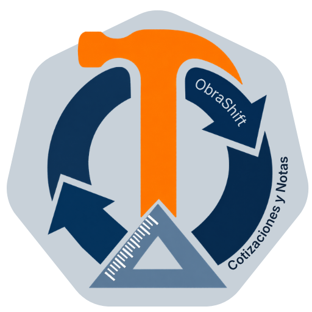

¿Te ha pasado que terminas una jornada pesada en la obra y todavía tienes que llegar a casa a pelearte con la computadora para enviar un presupuesto?
Para un contratista, electricista, plomero, pisero o pintor en México, el tiempo es dinero. Trabajar bajo el sol o resolviendo problemas en el sitio ya es suficiente esfuerzo como para pasar horas arrastrando el lápiz o usando formatos obsoletos que no sirven en la calle. Peor aún es el miedo a equivocarte en los números, dar un precio muy bajo y terminar descubriendo que la obra te costó de tu propia bolsa.
La calle exige velocidad, y tu negocio necesita herramientas diseñadas para la realidad del trabajo independiente.
Ya no necesitas esperar a llegar a tu casa para cotizar, ni depender de herramientas de escritorio estorbosas.

ObraShift es la aplicación móvil creada específicamente para que los profesionales de la construcción en México puedan cotizar, registrar gastos y asegurar sus ganancias directo desde el sitio de la obra, en menos de 2 minutos.
Probar ObraShift GratisMuchos técnicos independientes creen que para ganar más dinero necesitan trabajar más horas. La realidad es que la mayoría pierde dinero por no saber cobrar bien o por dejar ir detalles costosos debido al papeleo manual.
Cuando le dices a un cliente: "Le cobro $8,000 pesos ya con todo el material incluido", estás asumiendo un riesgo enorme. Si el precio del cable, la tubería o la pintura sube en la ferretería antes de que compres, esa diferencia sale directo de tu ganancia.
La gasolina para dar tres vueltas extra a la ferretería, la caja de pijas que no tenías contemplada... Todos esos pequeños gastos parecen insignificantes, pero si no los registras al momento, al final de la quincena tu utilidad real habrá desaparecido.
Usar hojas de cálculo con el diseño estándar de fábrica hace que tus presupuestos se vean idénticos a los de cualquiera. Si no puedes darle tu toque profesional, elegir tus propios colores o acomodar la información como a ti te gusta, tu marca pierde fuerza frente al cliente.
El presupuesto es solo la mitad del camino. El verdadero dolor de cabeza para muchos técnicos independientes viene al finalizar la obra, cuando surgen los molestos malentendidos con el cliente sobre lo que estaba incluido y lo que no. Acordar las cosas "de palabra" casi siempre termina en pérdidas.
Con ObraShift, también dejas atrás esos problemas:
No. Puedes crear cotizaciones, notas de servicio y registrar gastos sin conexión, aunque estés en una obra sin señal o sin datos. Solo necesitas internet cuando quieras enviarlas por WhatsApp.
Solo en tu celular. ObraShift no sube tus datos ni los de tus clientes a ningún servidor, y puedes borrar toda tu información desde la app cuando quieras.
Puedes crear 3 cotizaciones y 3 notas de servicio con las herramientas de la app: tu logo, tus colores y envío por WhatsApp. Así compruebas cómo se ven tus documentos antes de decidir.
Sí. ObraShift está pensada para electricistas, plomeros, piseros, pintores, albañiles y cualquier técnico independiente que cotice trabajos de construcción o mantenimiento.
Hacer presupuestos no tiene por qué ser la parte más pesada de tu día. Tu talento está en las manos y en resolver los problemas de la obra, no en pelearte con la tecnología o el papeleo manual.
Descarga la aplicación, lleva el control de tu dinero en el bolsillo y empieza a proteger las ganancias de tu esfuerzo.
Probar ObraShift Gratis en mi Celular